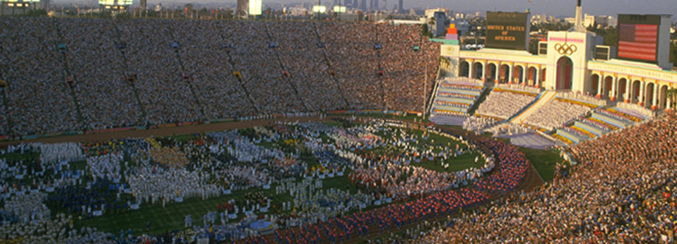
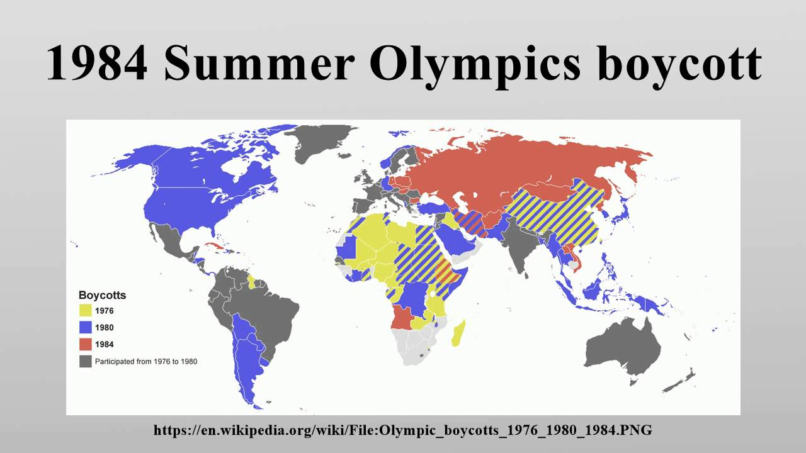

As a result from the 1976 Olympic boycott by Jimmy Carter, the USSR and 13 Eastern bloc countries boycotted the 1984 Olympics
Despite the abscense of certain sports due to the boycott, Olympic attendance was 140, a record at the time.
The 1984 Olympics are regarded as the most financially successful, serving as a model on how to conduct the Olympic

